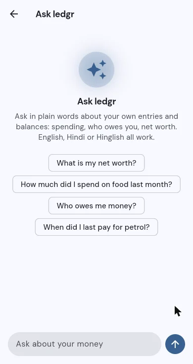
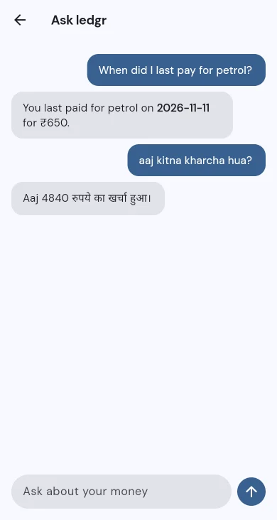

Ask Ledgr
Ask your own money questions in plain words, in English, Hindi or Hinglish, inside Ledgr, my personal finance app.


The problem
Ledgr already tracks bank, cash, UPI, informal lending and shared expenses. But finding an answer still meant tapping through screens. People wanted to ask: how much did I spend on food last month, who owes me money, when did I last pay for petrol. Often in Hinglish.
Decisions that shaped it
- Tools, not retrieval, for numbers. Most questions are totals and lookups. So the model picks one of six read-only tools that run SQL, and the database does the maths. The model never adds up numbers itself.
- Search only where text is fuzzy. Keyword and vector search (Postgres and pgvector) cover free-text notes like "DMart" or "chai".
- Small models on my own server. Qwen3 4B Instruct answers, and nomic-embed-text powers the search, both through Ollama. No paid API, and financial data never goes to a cloud AI.
- Read-only by design. It can suggest a new entry, but nothing is saved until the user confirms it.
- Evals from day one. A fixed set of questions with known answers, run after every change.
What I learned from the evals
Accuracy went up to 13 of 14 on the fixed set, and most of the gain came from rewriting the tool descriptions, not from changing the model. A bigger 8B model scored worse on the same set (8 of 14). Bigger was not better; clearer tools were.
What went wrong
- Totals that missed entries. Lookups worked, but "how much did I spend today" came back as zero. The total tools were filtering on the wrong thing. Fixed, and added to the eval set.
- Categories that didn't match. The app shows a "Bills" category; the tool knew different names. The model then replied that "bills" wasn't valid. Labels in the app and in the tools have to come from one list.
- Speed versus accuracy. In early speed tests, one small model answered fast but called a tool even for "what is the capital of France". Another was accurate but slow. Picking a model is a trade-off you have to measure.
Where it is now
In a live pilot with two or three users, streaming answers into the Flutter app.